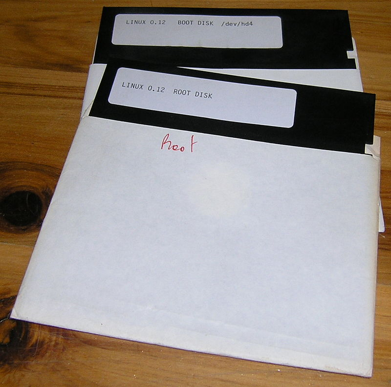

| Strona główna | Dystrybucje | Historia | Porównanie | Ciekawostki | Kontakt |
|---|

Historia Linuksa rozpoczęła się w 1991 roku, kiedy to fiński programista, Linus Torvalds poinformował na grupie dyskusyjnej Miniksa o hobbystycznym tworzeniu przez siebie niedużego, wolnego systemu operacyjnego, przeznaczonego dla procesorów z rodzin i386 oraz i486.
Linus stworzył jednak tylko jądro, pełny system operacyjny potrzebował jeszcze powłoki systemowej, kompilatora, bibliotek itp. W roli większości z tych narzędzi użyto oprogramowania GNU, co jednak w przypadku niektórych komponentów systemu wymagało poważnych zmian, niekiedy finansowanych przez Projekt GNU, niekiedy dokonanych już wcześniej przez Linusa Torvaldsa.
Dużo pracy wymagało także zintegrowanie systemu do postaci dystrybucji, które umożliwiały zainstalowanie go w stosunkowo prosty sposób. Jednymi z pierwszych były opublikowany 16 lipca 1993 Slackware Linux czy założony miesiąc później Debian, nazywający siebie GNU/Linux.
Wraz z rozwojem jądra Linuxa zaczęły pojawiać się różne dystrybucje (również nazywane “distros”), które są niezależnymi od siebie wersjami systemu operacyjnego Linux. Dystrybucje różnią się między sobą pakietami oprogramowania, interfejsem użytkownika oraz menedżerem pakietów. Wśród najbardziej znanych dystrybucji znajdują się Ubuntu, Debian, Fedora, Arch Linux, openSUSE i CentOS.